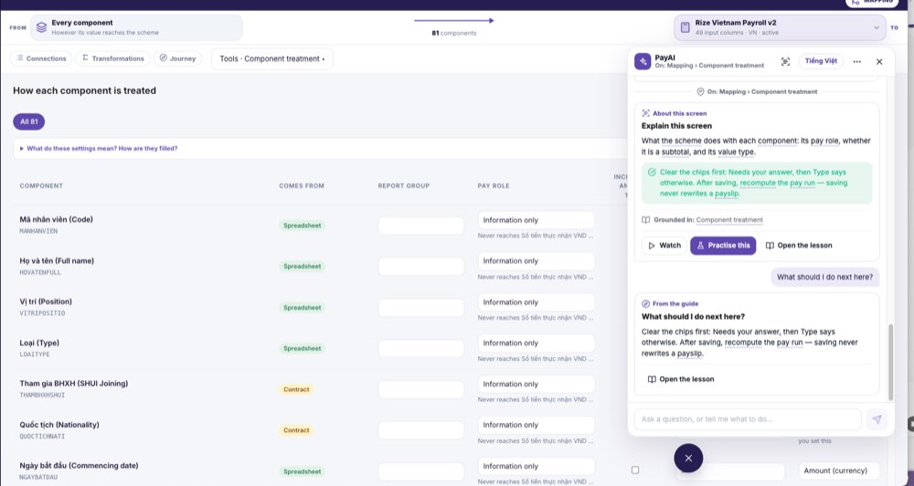
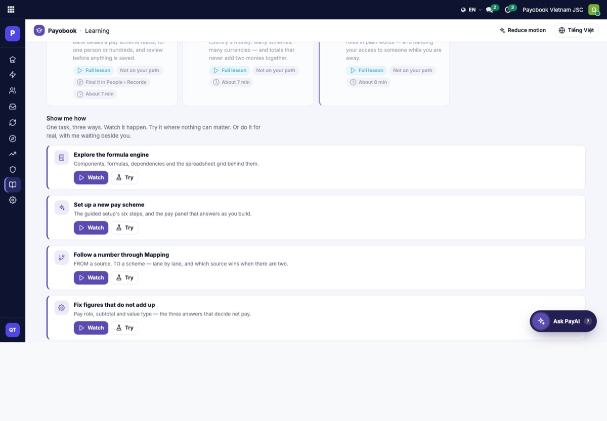
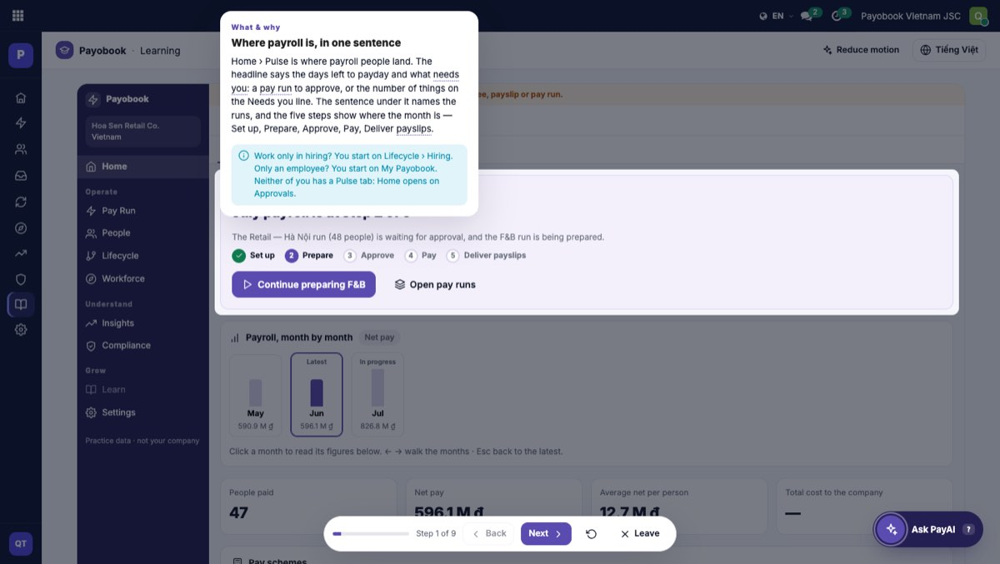

Help that explains every field, every step and every next move
Today the lessons describe screens in prose. They do not explain what each field means, how it gets filled, what it changes, how you reached the screen or what to do next. This page lists every gap I found (yours and mine), what the best help systems do, the engine that fixes the root cause, and three designs with working mock-ups. My recommendation is Option C.
Each screen has exactly one sentence for "what should I do next". The same sentence is shown by Explain this screen, the "first time here" nudge and the chat. It is typed by hand, it is not aware of what is on your screen, and nothing explains fields.
Generate the help from the product's own definitions: every field's meaning, choices, how it is filled, where it is used and what changes if you change it. Add a live "right now" step read from the screen's state. Author only the story on top.
Option C: help on the screen. A Guide panel and field cards inside every product screen, one calm Library page for Learning, and PayAI answering from the same cards. Options A and B are built in as its parts.
What is wrong today
I walked the live Learning page, the Pulse lesson, the lesson player and the Component treatment screen on payobook.com as the QA test user, and I read the learning content, the chat router and the walkthrough engine in the code. Each gap below says where it comes from and how the new design closes it.

Reported by you
| # | What you saw | Why it happens | How the new design closes it |
|---|---|---|---|
| G1 | "What should I do next here?" gave an off-tangent answer. | Every screen has one hand-written "next" sentence. Explain, the chat and the first-visit nudge all show that same sentence. It talks about chips that may not be on your screen. On payobook, where the AI assistant is switched on, I typed the same question on the same board and got a generic five-step "check data, run payroll, submit for approval" answer that ignored the screen entirely. | "Right now" is computed from the screen's state: rows needing an answer, type conflicts, unsaved changes, a run computed before the last save. Each line is a button that does the step. |
| G2 | "Open the lesson" took you to the top of Learning, not the lesson. | The door opens the Learning page with an empty target, although the page already accepts a lesson or station key (other doors pass one). | Every door carries its target. In Option C the lesson opens inside the Guide panel, so you never leave the screen. |
| G3 | Watch was vague and gave little information. | The Component treatment walkthrough is 4 steps of about 21 words each. It describes the board in general; it never names a field's choices, what it affects or what to press. | Each step has a fixed shape: Look at, It means, It affects, Press. Steps are written from the field cards, so they carry the real choices and consequences. |
| G4 | Opening Ask PayAI shows the top of the chat, not the latest message. | The chat remounts on every open and nothing scrolls on mount. A scroll only happens when a new message is pushed, which is why the first open on a new screen looks right and the second open does not. Measured live: closed and reopened on the same board, the chat sat at position 0 of 7,099. | Scroll to the latest message on open; show a "new since you left" marker. A one-line fix, shipped this week. |
| G5 | Try did not help much. | Try plays on a practice replica whose columns differ from the real board (Group and Subtotal instead of Report group and Included in another total; no Run signal). Every step is "observe", so Try is only pressing Next over a fake screen. | Try becomes a checked task: "set Loan Installment to Taken off net pay and save". The engine checks the real state, not a Next press. Replicas are generated from the same board definition, so they cannot drift. |
| G6 | Lessons do not explain fields, how they are filled, the workflow, how you got here or what is next. | There are 82 field explanations across 20 screens and none for Component treatment or Mapping. Lessons have no "before / after" structure. The board's own explainer text exists but is hidden under an expander and not shared with lessons or PayAI. | Field cards for every column on every screen, generated from the product's definitions. A "You are here" workflow strip on every Guide. One text, three surfaces. |
| G7 | The Lessons page is chaotic; a user gets lost. | See the next table. The page is 8,000 px tall with about 65 cards of four kinds. | One calm Library page: Continue, a short path, then screens listed exactly like the sidebar. Details are below in each option. |
Found by me on the live screens
| # | Gap | Evidence | Design response |
|---|---|---|---|
| G8 | The Learning page is far too long and mixes four kinds of card. | 8,044 px tall. 42 lesson cards, about 20 "Show me how" walkthrough cards, a tour card and a Lifecycle "One person's road" timeline. The same topic appears twice (for example "A day in Workforce" is a lesson card and a walkthrough card). | One row per screen. Watch, Try and Guide are chips on that row, not separate cards. |
| G9 | "Not on your path" appears about 30 times. | A negative chip on most cards. The eye reads the page as "not for you". | Only required items get a mark. Everything else is simply listed. |
| G10 | Four different ways to practise on one page. | "Practice missions" button, "Practice mode" banner, "Try" buttons and "Do it live". | One word: Try. The Library has one Practice entry. |
| G11 | Every card wears three or four chips. | Full lesson · Required · Find it in Pay Run › Runs · About 8 min. The minutes are hand-typed estimates. | A row shows title, one-line purpose, a progress ring and one primary action. |
| G12 | The role is picked for you and changes what is required, with no explanation. | "Approver" was pre-selected for the QA user ("Picked from your access"). The Continue card says "This is the next lesson the map asks for" and nothing else. | The Continue card says why: "Required for Approvers · 2 of 7 done · next: Approvals". |
| G13 | "Reduce motion" sits in the page header as a primary control. | It is an accessibility preference. | Moves to Learn settings; the system setting is respected automatically. |
| G14 | Gamification with no meaning. | "Overall 0 / 42", "Pay Run badge", a streak chip. Nobody is told what the badge gives them. | Progress is shown per path ("5 of 7 required"). Badges are dropped unless you want them. |
| G15 | Search only filters this page. | It matches lesson titles and summaries, not field names, glossary terms or steps. Placeholder "Search the journey" is internal vocabulary. | One search over screens, fields, terms, tasks and lessons. Typing "pay role" lands on the field card. |
| G16 | The ⌘K lesson search silently fails on load. | Console on every load today: "lesson rows not added to the search: Cannot translate string: translations have not been loaded". | Register after translations load. Quick fix this week. |
| G17 | The lesson player covers what it is explaining. | Step 1 of the Pulse lesson explains the headline and places its card over the headline. Two sidebars show at once (the real rail plus the replica's). The text "Press esc to exit full screen" is visible. | The step card docks to the panel, never over the target. One rail. No full-screen mode. |
| G18 | Lesson steps are walls of prose. | Median 29 words a step, up to 98, with a tip box. No structure says what to look at, what to press or what changes. | Every step: Look at · It means · It affects · Press. Short, same shape everywhere. |
| G19 | The practice replica is a made-up company that drifts from the product. | "Hoa Sen Retail Co., July 2026", "Total cost to the company: —". The real demo world has 4,500 people and 41 pay runs. | Practice runs on the demo company for demo tenants, and on generated replicas elsewhere. Replicas are built from the screen definition. |
| G20 | Three vocabularies for the same columns. | The board says Report group, Included in another total, Run signal. The lesson says Group, Subtotal. The anchors say Tells the run. | Labels come from the field definition once. Nothing else may name a field. |
| G21 | A raw word shows in the Comes from column. | Formula rows show "calculated" because the label map has no entry for it. | Product bug, fix this week: label "Calculated by a formula". |
| G22 | Lessons teach Vietnam to everyone. | Statutory lessons talk about BHXH, BHYT and thuế TNCN. Rize runs Indonesia, India and Singapore schemes. A Rize user learns the wrong statutory world. | Country-aware content: the statutory cards are generated from the tenant's own policy records and tax tables. |
| G23 | A slow screen is reported as "no access". | The walkthrough waits 8 seconds for a screen to say it is ready, then shows "You don't have access to this screen". When the board shows an error, the steps end on "That control is not on this screen right now". | Every failure names its real reason and the next step: "The board is still loading" with Retry; "No scheme selected" with Pick one. |
| G24 | A PayAI dead end asks you to repair the app. | Your screenshot: "I cannot see your list of screens yet. Close and reopen this panel, then ask again." | The chat reloads its screen list itself and answers. If it truly cannot, it offers the screen door directly. |
| G25 | Three surfaces, one sentence. | The first-visit nudge, Explain this screen and the chat answer all show the same blurb and the same next sentence. | Each surface has its own job: nudge = one line and a Guide button; Explain = purpose + workflow strip; Right now = live steps. |
| G26 | The chat suggests the question it just answered. | "What should I do next here?" is offered as a chip right under the card that already contains that sentence. | Suggestions are drawn from what the screen can do next and what people on this screen actually asked. |
| G27 | "Do it for real" exists for one task only. | 26 walkthroughs; "Do it live" appears on one card. Most tasks can only be watched or tried on a replica. | Every task gets a guarded Do mode: the engine points, you press, it stops before anything that writes. |
| G28 | The Ask PayAI button covers page content. | On the Learning page it sits over the Lifecycle timeline's last label and over card text at the bottom right. | The page reserves space for the button; the Guide panel replaces the floating pill on product screens. |
| G29 | Three units of progress for one lesson. | "About 8 min" on the card, "Full lesson · 8 min" on the outline, "Step 1 of 9" in the player. | One unit: steps. Minutes are shown once, computed from steps. |
| G30 | No feedback loop. | No "Was this helpful?" on answers, steps or lessons. The question miss log stores no question text, so authors never learn what people could not find. | A thumbs control on every card and step. Misses are logged as topics (not personal text) and shown to authors in Learn › Settings. |
| G31 | Nowhere says where a value is used or what changes if you change it. | The pay role feeds run totals, the "figures do not add up" check, Home figures, the payslip, pay bands, the bank file and more. No help text lists this. | The field card has "Used by" and "If you change it" sections, generated from the readers of that field in the code. |
| G32 | The board already has good explainer text, hidden and unshared. | "What do these settings mean? How are they filled?" is an expander on the board. The lesson and PayAI never use it. | That text becomes the seed of the field cards and is removed from the board (the (i) replaces it). |
| G33 | Mixed-language fragments in explanations. | Under every pay role: "Never reaches Số tiền thực nhận VND …" (an English sentence with a Vietnamese component name) on the Rize Vietnam scheme. | Sentences name the pay role, not the component: "Never reaches net pay". |


What the best help systems do
I compared ten products whose help is good enough that people rarely need anything else. The last column says what we take. We have one advantage none of them has: our help can be written from the product's own definitions, because we own the code.
| Product | What they do well | What we take |
|---|---|---|
| Stripe (API reference) | Every field is documented from the schema: type, allowed values, default, what it affects. Explanation on the left, a real example on the right. | Field cards generated from the model. Explanation beside a real example row. |
| Xero (help panel) | A right-hand panel reads the page you are on and suggests the right articles. Articles open inside the panel so you keep working. | The Guide panel that knows the screen and never leaves it. |
| Gusto (Run payroll) | A small "?" beside fields, "What's this?" copy in plain words, and a checklist before you run. | The (i) on every field label. Pre-flight "Right now" checklist. |
| Notion (help centre) | Every multi-step instruction has a picture. Quick fixes are separate from courses. | Tasks ("How do I…") separate from lessons ("Understand…"). |
| Salesforce Trailhead | Hands-on challenges are checked against your live org. A badge proves you did it. | Try is verified by the real state, not by pressing Next. |
| Intercom (Fin and resource centre) | One chat answers from the articles and cites the article. "Was this helpful?" feeds the authors. | PayAI cites the field card or guide it answered from. Thumbs on every card. |
| Linear (docs) | Docs mirror the product's menu exactly. Short pages, keyboard first. | The Library is organised exactly like the sidebar. ⌘K opens any guide. |
| Duolingo / iOS Tips | One thing at a time. Small, finishable units. One big Continue button. | One Continue card. Steps of one idea each. |
| Shopify (help centre) | "Learn more" beside every setting. Every article follows one template: Overview, Before you begin, Steps, Considerations. | One fixed Guide template for every screen. |
| QuickBooks (field help) | Field popovers say "where this appears" ("This shows on invoices"). | "Used by" on every field card. |
Sources I checked for current patterns: Chameleon on contextual help, Userpilot help centre examples, Docsie on context-sensitive help, Xero's in-app help thread, Intercom Fin. The product-specific points come from my own knowledge of those products.
The content engine: help written from the code
This is the part that removes the root cause. Three layers, one source, three surfaces.
For every screen, a generator reads the product: each field's label, help text and choices with their labels; how it gets filled (automatic, set by you, from the file); every place that reads it; each button and what it calls; and the hub and tab path to reach the screen. Bilingual, because labels and help already have Vietnamese translations.
Writers add why the screen exists, when you use it, the mistakes it prevents, and the story of one person's pay. This exists today. It gets shorter, because the facts now come from Layer 1.
Each screen exposes a small "state to next step" table. Component treatment already counts rows that need an answer and type conflicts. The Guide turns them into numbered steps with buttons.
What one field card contains (real content for Pay role)
Everything below is read from the product today: the field's help text, its six choices, the "set by" marker, and the 20-plus places in the code that read it.
Pay role
- Added to net pay: counts toward gross and reaches net.
- Taken off net pay: a deduction.
- Net pay itself: the final figure. One per scheme.
- Employer cost: paid by the company, never reaches the person.
- Information only: shown, never counted. Hours, codes, dates.
- Both added and taken off: mixed; usually needs a split.
The thumbs icons above are placeholders in this page only. In the product they are Lucide icons, as every icon is.
What one Guide contains (the fixed template for every screen)
One sentence of purpose, then "You are here": came from → this screen → next. For Component treatment: Formula Studio → Mapping › Component treatment → Pay Run › Run (recompute).
Live steps from the screen's state, each a button. "3 rows need your answer", "1 type says otherwise", "June run was computed before your last save: recompute".
Every column and control as a field card, searchable. Same cards open from the (i) beside each label.
"How do I…" recipes with Watch, Try (checked) and Do it (guarded). "Fix figures that do not add up", "Mark hours as information only".
The lesson, rewritten in the step shape: Look at · It means · It affects · Press. Mistakes this prevents. Related terms.
PayAI, answering from the cards above and citing them. Suggested questions come from what people on this screen asked.
Walkthrough steps, before and after
Today (step 3 of 4, Component treatment)
"Pay role, subtotal, value type. The pay role decides the arithmetic from gross to net. Subtotal stops a total being counted twice. Only an amount can touch net pay."
Three fields in one step, wrong labels, nothing to press.
New (one field a step, same shape every time)
Three designs
All three use the same content engine. They differ in where help lives and what the Learning page becomes. Click a tab. In each mock-up, press an i to open a field card, and press the panel sections.
Learning becomes a complete manual organised exactly like the product sidebar. Every screen has one Guide page with the fixed template. Search is the hero. Progress is quiet. The same Guide page opens in a side panel on product screens.
People who look things up: payroll officers in month two, administrators, auditors. Teams who want a printable reference.
Library
Component treatment
Pay role used by 10 places
Report group
Included in another total
Run signal
Value type
Comes from
Strengths
- Complete and predictable; the "no other documentation" promise is met on day one.
- Easiest to generate and to keep true.
- Search works across everything.
Weaknesses
- Reading-heavy; a new starter has no path.
- Help still lives one page away from the field.
- Two-pane layout is dense on a 13-inch laptop.
Score against the brief
Keep the journey, cut it to the bone. Three zones: Continue, My path (a short checklist for my role), Browse (collapsed by product area). A full-screen lesson player with a step rail on the left and the screen on the right; each step shows the fields it touches.
New starters in their first two weeks. Tenants that onboard many people at once (Rize).
Your path · Approver
How each component is treated
Practice company| Component | Comes from | Report group | Pay role | Value type |
|---|---|---|---|---|
| Basic SalaryBASIC | Spreadsheet | Earnings | Added to net payWorked out from the formulas | Amount (currency) |
| Loan InstallmentINLOAN | Spreadsheet | Deductions | Needs your answerConfidence: review | Amount (currency) |
| OT Weekday (hrs)OTWD | Spreadsheet | Information | Information onlyWorked out from the formulas | Quantity (hours, days) |
| Net payNET | Calculated by a formula | Net pay | Net pay itselfWorked out from the formulas | Amount (currency) |
Strengths
- Calm and finishable; one Continue button.
- Best onboarding experience of the three.
- Keeps what works today (paths, progress, Try).
Weaknesses
- Field reference sits behind lessons; "what does this column mean" is still two clicks away.
- Still a separate place to go; people stop going there after week two.
Score against the brief
The product screen is the manual. Every field label gets a quiet (i) that opens its field card. A Guide panel on the right of any screen has six sections in a fixed order, no tabs: This screen, Right now, Fields, Tasks, Understand, Ask. Learning becomes one calm Library page: Continue, a short path strip, then every screen listed like the sidebar.
Everyone, because the help is where the question arises. New starters follow the path strip; experienced people never leave the screen.
How each component is treated
| Component | Comes from | Report group | Pay role | Included in another total | Value type |
|---|---|---|---|---|---|
| Basic SalaryBASIC | Spreadsheet | Earnings | Added to net payWorked out from the formulas | ☐ | Amount (currency) |
| Loan InstallmentINLOAN | Spreadsheet | Deductions | Needs your answerCould not tell from the formulas | ☐ | Amount (currency) |
| OT Weekday (hrs)OTWD | Spreadsheet | Information | Added to net payType says otherwise: hours cannot reach net pay | ☐ | Quantity (hours, days) |
| Social insurance (employee)SIEMP | Calculated by a formula | Deductions | Taken off net paySet by a person | ☐ | Amount (currency) |
| Gross payGROSS | Calculated by a formula | Earnings | Added to net payWorked out from the formulas | ☑ | Amount (currency) |
| Net payNET | Calculated by a formula | Net pay | Net pay itselfWorked out from the formulas | ☐ | Amount (currency) |
Learn
The Library lists only the sections you can open. Progress rings are per screen. Minutes are shown only on the Continue card. No badge, no streak, no "Not on your path".
Strengths
- Help where the question arises; nobody leaves the screen.
- One content source feeds the panel, the Library and PayAI, so the three can never disagree.
- "Right now" is live and actionable, which is exactly what G1 asked for.
- The Learning page becomes calm without losing the path.
Weaknesses
- The biggest build: (i) buttons and the Guide panel touch every cockpit.
- Needs the generator and a readers map maintained with the code.
- Field cards must stay short or the panel becomes a wall again.
Score against the brief
Recommendation: Option C, with A inside it and B's path strip on top
Option C is the only one that answers the question where it is asked. It also contains the other two: the generated Guide pages of Option A are the panel's content, and the Continue card and path strip of Option B are the top of the Library. The three bugs you hit all disappear in it: the next step is live, the lesson opens in the panel, and the chat is one section of the same panel.
Press (i) on any column and see, in one card, what it means, where it is used and what changes if you change it, with the real row beside it.
Every failure names its reason and next step: still loading, no scheme chosen, no access, nothing to do here. "Close and reopen the panel" is gone.
Screen words only. The truth gate blocks any label that is not on the screen, in English and Vietnamese.
Build plan
This week, before anything else (small fixes to the live product)
- Chat opens at the latest message (G4).
- "Open the lesson" carries the screen's lesson key (G2).
- ⌘K lesson rows registered after translations load (G16).
- "calculated" becomes "Calculated by a formula" (G21).
- The "cannot see your list of screens" dead end reloads and answers (G24).
- "Never reaches Số tiền thực nhận…" becomes "Never reaches net pay" (G33).
Then five phases
Generator reads fields, choices, help text, "set by" markers, readers and the hub/tab path for the first eight screens (Component treatment, Mapping, Run, Runs, Payslips, Approvals, Pulse, Formula Engine). Truth gate in the build. Bilingual output.
The (i) on every label and the six-section panel on those eight screens. "Right now" wired to each screen's state. PayAI answers from the cards and cites them.
The new Learning page: Continue, path strip, screens listed like the sidebar, one search over everything. Old page retired.
Every step in the Look at · It means · It affects · Press shape, one field a step, played in the panel beside the real screen. Try becomes checked; Do it guarded. Replicas generated from the screen definition. Country-aware statutory content.
Remaining 56 screens through the generator. Thumbs on every card and step; misses shown to authors in Learn › Settings. Full Vietnamese review.
Each phase ships to payobook first, then the tenants, under the tiered deploy rule. Lessons and tours follow every screen change in the same work, as the standing rule says.
Decisions for you
- Which option? I recommend C. A or B can be built alone, and both are smaller.
- Badges and streaks: drop them (my recommendation) or keep them quietly in a profile corner.
- Practice world: demo company on payobook, generated replicas on tenants (my recommendation), or replicas everywhere.
- Workflow: the phased design-then-build cycle, or build directly.